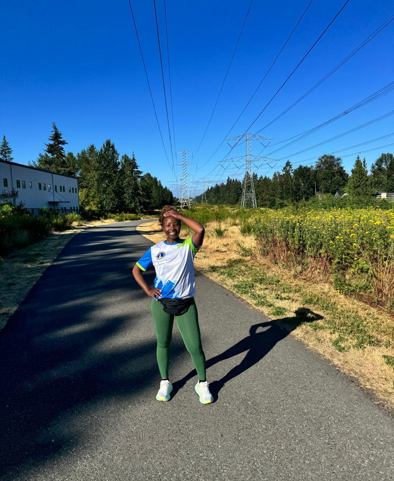
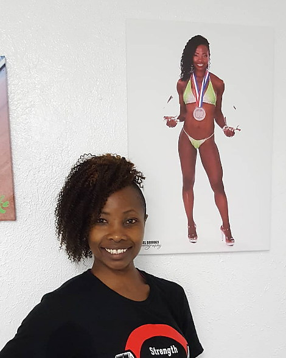

The Food Clarity Method
Stop guessing what to eat. Start understanding your food.
A practical 16-week nutrition coaching program for women who have tried the diets, the supplements and the weight-loss trends and still struggle with stubborn weight and belly fat.
Food claritySimple actionConfidence
“I am eating healthy, but I am still not losing weight. I do not know what to try next.”
If you have said a version of that out loud, you are in the right place. No shame and no panic. Just practical education and steady support until food makes sense again.
You are not new to trying.
You have tried diets, supplements and weight-loss trends. You are tired of being handed another rule without any real understanding of why it is supposed to work.
Where you are
You still struggle with stubborn weight and belly fat, even in the weeks when you feel like you are doing everything right. You have read the articles and followed the accounts. You have probably been stricter with yourself than anyone reading this would guess, and the mirror has not agreed with the effort.
What keeps frustrating you
Every source tells you something different, and all of them sound certain.
What you actually need
Clear guidance, a structure that survives a real week, and someone holding you to it who is not going to judge you.
I make nutrition understandable.
I cut through the conflicting advice first, then turn what is left into a routine you can actually keep.
The noise
Diets, supplements and weight-loss trends.
What is missing
Understanding what, how much and why to eat.
Betty
I make the next step clear.

Confusion becomes confidence.
The outcome is not perfect eating. It is knowing what to do next, and why.
Confused
Rules, fear and conflicting advice.
Capable
Food choices make sense in real life.
Confident
You can adjust without starting over.
The Food Clarity Method
A practical 16-week weight-loss and nutrition coaching journey, in five phases. Each one does a single job and builds on the one before it, and the coaching adapts to the week you actually have.
-
Phase 01
Clarify
See the current patterns, confusion and real starting point.
-
Phase 02
Understand
Learn food, portions and the reason behind each choice.
-
Phase 03
Apply
Put the knowledge to work in everyday meals and routines.
-
Phase 04
Stay consistent
Use support and accountability to keep moving.
-
Phase 05
Own it
Trust the skills and maintain progress beyond the program.
What is included
- Private one-to-one coaching for sixteen weeks
- A nutrition structure built for your kitchen, budget and week
- Portion training you can do with your own hands and plates
- Label reading, so the front of the packet stops deciding
- Weekly check-ins, honest feedback and adjustments
- Restaurants, travel, family meals and the weeks that go wrong
- Skills you keep, so you can do this without me

I take the complicated and make it simple.
I began teaching yoga in Kenya at eighteen, guided by Mrs Kanja, who was the first person to sit me down and teach me about eating well. Preparing for bodybuilding competitions in the States is where precision nutrition stopped being a theory for me.
Then my own body stopped responding the way it used to, and I understood the frustration from the inside. There is so much health information out there that it has become genuinely impossible for a normal person to tell what is real and what is marketing.
Taking the complicated and making it simple is my natural gift. It is also the whole job.
Progress comes from
what you repeat.
What has happened for the women I coach.
Two of the women I have coached, in as close to their own circumstances as I can put it. Coaching supports habits, understanding and accountability. It is not a promise of a particular result.
30pounds
She came to me struggling with stubborn belly fat. We worked on her nutrition, meal by meal, until she understood the reason behind what was on her plate. Thirty pounds down, and she knows how to eat well without me standing next to her.
Nutrition coaching client
My own cousin.
She came to me worried about where her health was heading, and we worked through her nutrition together, month after month. Family is the hardest audience there is, and the most worth it. She understands her food now, and she is not guessing anymore.
Free guide
The label-reading guide for real life
Serving size, protein, added sugar. Three numbers, in that order, and you can judge almost any packet in the aisle. This is the short, plain-English guide I wish every woman had before she started another diet.
Email me and I will send it straight back.
Three numbers, in that order.
Five beliefs behind every conversation.
Understand your food
Learn the reason, never just the rule. If you cannot say out loud why a food is on your plate, the plan is doing the thinking for you, and it will stop working the first week life gets complicated.
Keep it practical
It has to work in an ordinary week.
Progress over perfection
One meal never becomes a verdict. You are allowed a bad Tuesday.
You do not do it alone
Support and accountability stay human.
Learn it for life
Build capability, not dependency. The whole design is that you leave.
Stop guessing what to eat.
Book a free 20-minute conversation. We will talk through what you have already tried, what is actually getting in the way, and whether the 16-week method is right for you.